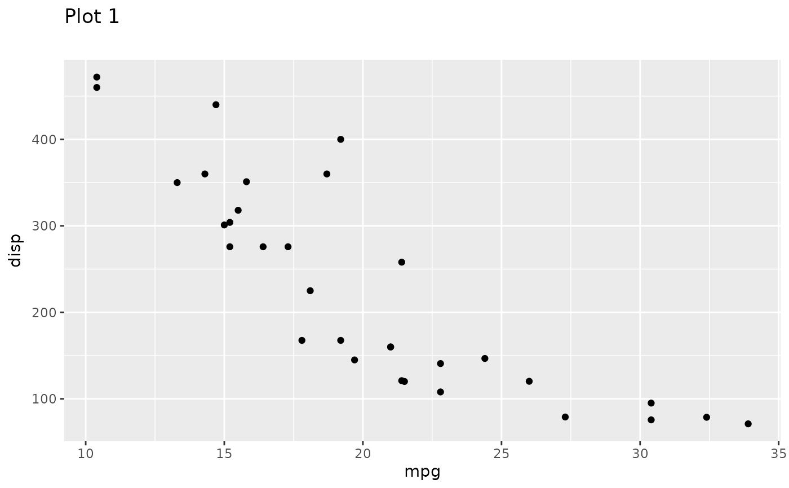
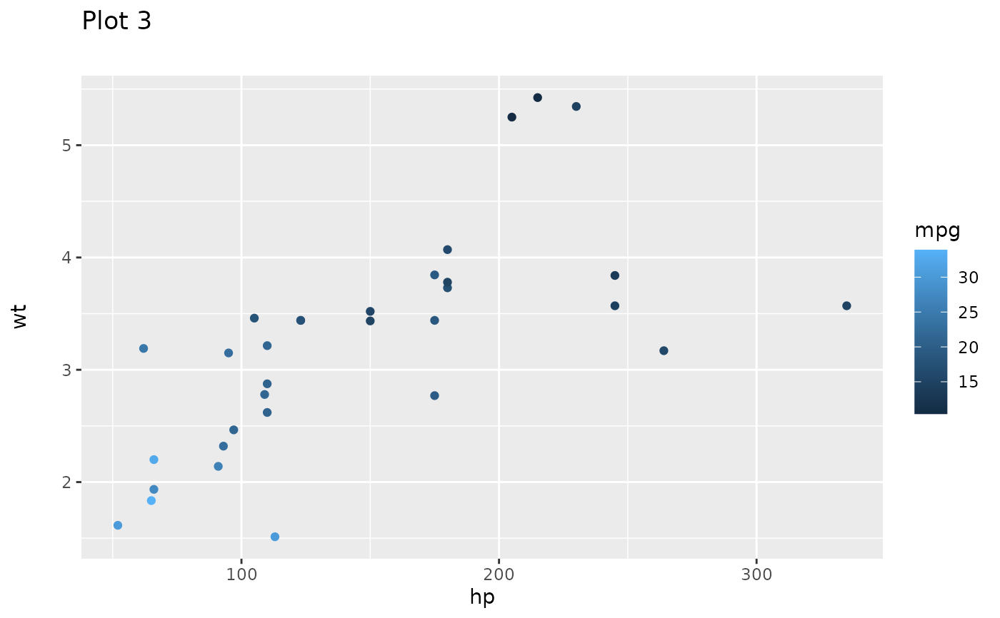
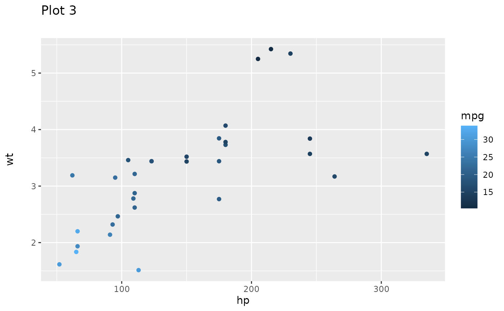

Sometimes it is necessary to make sure that separate plots are aligned, with each other, but still exists as separate plots. That could e.g. be if they need to be part of a slideshow and you don't want titles and panels jumping around as you switch between slides. patchwork provides a range of utilities to achieve that. Currently it is only possible to align ggplots, but aligning patchworks will be supported in the future.
Value
get_dim() and get_max_dim() return a plot_dimension object.
set_dim() returns a modified ggplot object with fixed outer dimensions and
align_patches() return a list of such. The modified ggplots still behaves
like a standard ggplot and new layers, scales, etc can be added to them.
Examples
library(ggplot2)
p1 <- ggplot(mtcars) +
geom_point(aes(mpg, disp)) +
ggtitle('Plot 1')
p2 <- ggplot(mtcars) +
geom_boxplot(aes(gear, disp, group = gear)) +
ggtitle('Plot 2')
p3 <- ggplot(mtcars) +
geom_point(aes(hp, wt, colour = mpg)) +
ggtitle('Plot 3')
p4 <- ggplot(mtcars) +
geom_bar(aes(gear)) +
facet_wrap(~cyl) +
ggtitle('Plot 4')
# Align a plot to p4
p4_dim <- get_dim(p4)
set_dim(p1, p4_dim)

# Align a plot to the maximum dimensions of a list of plots
max_dims <- get_max_dim(p1, p2, p3, p4)
set_dim(p2, max_dims)
 # Align a list of plots with each other
aligned_plots <- align_patches(p1, p2, p3, p4)
aligned_plots[[3]]

# Aligned plots still behave like regular ggplots
aligned_plots[[3]] + theme_bw()
# Align a list of plots with each other
aligned_plots <- align_patches(p1, p2, p3, p4)
aligned_plots[[3]]

# Aligned plots still behave like regular ggplots
aligned_plots[[3]] + theme_bw()